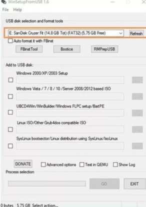

Erro de boot do Windows XP no Rufus e no Ventoy
O problema
Ao instalar o Windows XP a partir de um pendrive de boot (pendrive preparado para iniciar o computador e instalar um sistema) criado com o Rufus ou o Ventoy, a primeira etapa da instalação, em modo texto, funciona, mas ao reiniciar para a segunda etapa (modo gráfico) aparecem erros de arquivos ausentes ou a tela azul (BSOD).
Possíveis causas
O Windows XP foi lançado em 2001, pensado para instalação por CD-ROM. O seu instalador não tem drivers para o barramento USB (o canal de comunicação das portas USB) na primeira fase da inicialização, não reconhece discos no modo SATA/AHCI (o padrão de comunicação dos discos modernos) e não suporta o esquema de partição GPT nem o firmware UEFI. Por isso, ao reiniciar, o computador perde a referência do pendrive.

Solução no Windows
Em vez do Rufus ou do Ventoy, usamos o WinSetupFromUSB. Essa ferramenta faz o pendrive simular a estrutura de um disco óptico (CD/DVD), contornando as limitações de boot do sistema e permitindo concluir a instalação do Windows XP. Se a instalação ainda mostrar tela azul ao procurar o disco, mude o modo do controlador SATA de AHCI para IDE (ou "Compatibility") no setup da BIOS.
E no Linux?
O problema é específico do instalador do Windows XP. Distribuições Linux, como o Ubuntu, são feitas para instalação por pendrive e funcionam normalmente com o Ventoy, o Rufus ou o comando dd. Para quem usa Linux e precisa criar o pendrive do Windows XP, o WinSetupFromUSB não funciona, mas é possível usar o programa em uma máquina virtual com Windows.
Saiba mais
Para ver todo o processo de criação do pendrive com o WinSetupFromUSB, assista a um dos tutoriais em vídeo abaixo: